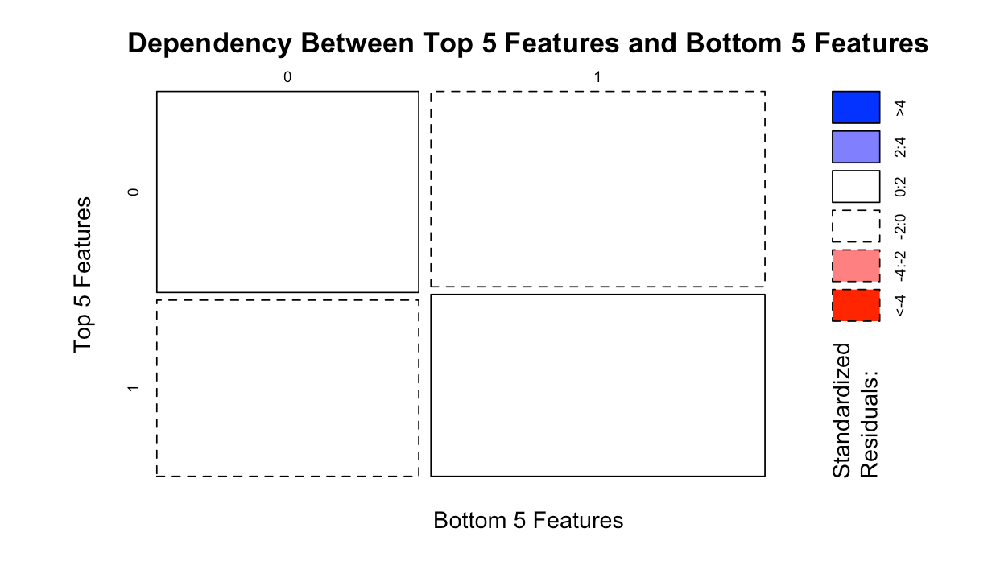
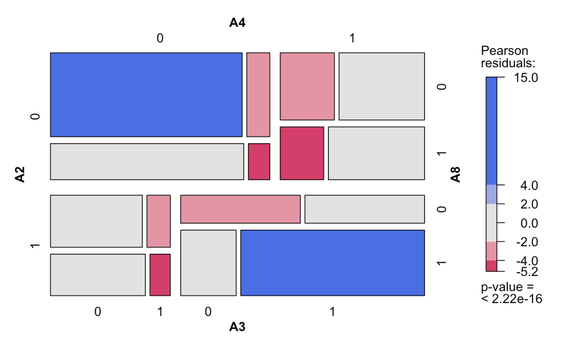
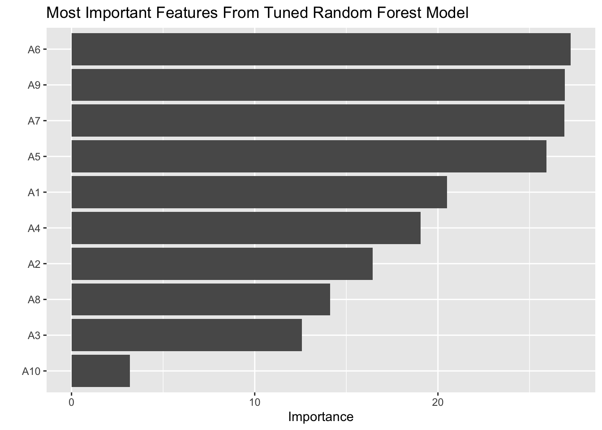
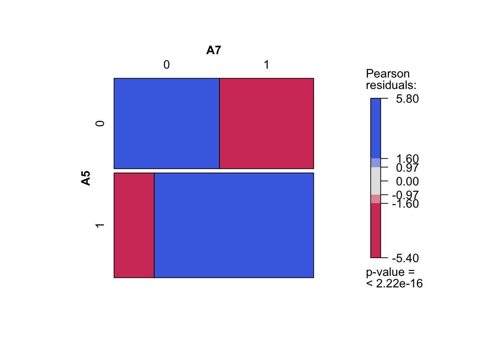

# Libraries
library(tidymodels)
library(tidyverse)
library(randomForest)
library(ranger)1 Background and Significance
The number of diagnoses of several different child developmental disabilities including ASD (Autism Spectrum Disorder) have increased significantly since the 2000s [1]. Social and developmental disabilities place a significant psychological and economic burden on individuals affected by ASD as well as their families, schools and healthcare systems [2]. The increasing prevalence is likely due to a variety of causes, making it difficult to determine whether the increasing rates of diagnosis are due to a greater degree of sensitivity in diagnostic criteria, shifting demographics, and/or biological changes. It is clear that the annual increases in autism prevalence have been consistent and significant [3]. In 2002, the Centers for Disease Control and Prevention (CDC) estimated that the overall prevalence of ASD from 14 sites in the US was 6.6 per 1000 for children aged 8 years [4]. In 2012, the CDC estimated that “14.5 per 1,000 (one in 69) children” would have ASD, and only 6 years later in 2018, they estimated that [5] “23.0 per 1,000 (one in 44) children aged 8 years” [6] would have ASD.
It is unknown whether this increase in prevalence is cause for alarm; it may either signal concerning secular trends, or it may simply be a sign that awareness for ASD has increased. Recent research has been performed assessing the correlations between ASD and different genes, as well as optimizing the diagnostic process.[3]. Accurate and early screening is crucial, and allows time and resources to be allocated in a more effective way. Early identification of ASD may improve the efficacy of treatment, research, and reduce the long-term economic burdens of families. Recent technological and computational advancements have led to strides in machine learning and classification, allowing it to be utilized as a screening tool for multiple diseases, including ASD [7]. Dr. Thabtah, who is associated with the Nelson Marlborough Institute of Technology, describes a variety of machine learning models for prediction [8]. In a 2017 paper of his specifically, he discusses the issue of over-fitting when it comes to the use of machine-learning in ASD screening. He specifies how the aim of machine learning ASD screening is to “balance the specificity and sensitivity” within the data sets [9]. Our study uses data from 1054 Q-CHAT-10 toddler questionnaires collected by Thabtah during July of 2018 [10]. Thabtah (2018) used Repeated Incremental Pruning to Produce Error Reduction (RIPPER) and C4.5 (Decision Tree) machine learning algorithms to perform his analyses of children, adolescent, and adult Q-CHAT-10 screening responses [11].
We used random forests to identify the largest contributing variables involved in the Q-CHAT-10 questionnaire for toddlers1 and permutation tests to explore the dependency between questions. By understanding the relative importance of each question and identifying dependencies, we can evaluate the potential efficacy of the questionnaire. For example, if the outcome one question tends to agree significantly with the outcome of another, then that may indicate a redundancy or a lack of specificity in picking up other ASD-predicting social and behavioral traits.
2 Methods
For our analysis we used the open source data of Q-CHAT-10 responses collected by Dr. Thabtah [10], which includes 1054 responses for toddlers via the ASD Test app in 2018. We used decision trees and random forests in R [13] to identify which questions are most associated with and have a tendency to appear in conjunction with other questions.
We want to rank the questions in order of importance and contribution. Although feature importance may not necessarily have too much technical significance within our code, it is very beneficial for visual presentation. Feature importance provides us with some insights on which social/behavioral questions within the questionnaire to explore more deeply.
The responses for each question in the Q-CHAT-10 questionnaire were encoded with either a one or a zero, with one indicating ASD-like behavior associated with that response and 0 indicating a lack of ASD-like behavior associated with that response. In order to determine whether or not a toddler was recommended for referral, the total number of responses of “one” were summed, and this sum was labelled as their Q-CHAT-10 score. If a toddler were to receive a score of 4 or above, they would be seen as being at a greater risk of ASD, which in our model would mean that the prediction would be y = 1 (of concern and should see professional diagnosis). Below is a representation of this model in the form of an equation, where the sum of \(x_i\)s represents the sum of the individual scores for each question, which can be one or zero. The true model of our data is, in essence, deterministic.
\[ y =\begin{cases} 1 & \sum_{i=1}^{10} x_i \geq4\\ 0 & \sum_{i=1}^{10} x_i < 4\\ \end{cases} \]
Random forests and decision trees are essential tools for our analysis. Decision trees are made up of many branches with nodes that are questions with responses that that split into more branches. A random forest is a “forest” or many “bagged” decision-tree models put together [14]. Within the random forest the individual decision trees “will split the nodes by selecting features randomly” and the final classification or prediction “will be selected based on the outcome” of all the trees [15].
The beauty of using random forests for our model is that on our large data-set, we are able to initially plug in all of our variables into the prediction model and then take deeper look at said individual variables. Random Forests are also stable, have low variance, and high accuracy compared to decision trees because random forests are composed of a multitude of decision trees. Random forests can make variable importance plots, which are easily understandable and suitable for presentation and discussion [15].
The potential disadvantages of using random forests are that they may take a long time to run and require high computational power [15]. There are also the potential problems of over-fitting and under-fitting. Reducing and increasing the depths of trees may be required to combat over-fitting and under-fitting respectively. We plan on tuning the hyper-parameters in our tree model to get the most accurate and representative prediction as possible [16].
Since the model for determining whether or not someone has ASD traits is already known, the predictive capabilities of our model are not relevant to our study, even if it is highly successful, which we expect it to be. The main intention with regards to the use of random forest modeling is the determination of relative variable weights through its variable importance feature.
We obtain question importance ranked our original random forest model with tuned hyper-parameters. From the variable importance tuned our tuned random forest model, we conduct several chi-square tests and with permuted samples and test dependency between several of the top-ranked questions. We also conducted a larger chi-square test in which the two groups were 4000 randomly sampled responses from the top 5 questions and compared if they were independent of 4000 randomly sampled responses from the bottom 5 questions.
We conduct multiple hypothesis tests so to guard against p-hacking we set an adjusted alpha level of 0.001 / (# of tests) = 0.001 / (10) = 0.0001. Combining our random forest models and chi-squared tests we use within 10 hypothesis tests (random forest tests do not have p-values, so we would actually be doing only 3 tests and 5-6 mosaic plot tests, but 0.0001 is a lower threshold than dividing by 3 and it is a clearer number to interpret). We decided to use 0.0001 as our adjusted alpha significant for each statistical test we conduct (which is same as assuming we conducted around 10 hypothesis tests). With this adjusted alpha level, we can be significantly more confident with our conclusions because we are taking into account how in each additional test there’s a greater chance of falsely rejecting the null hypothesis (Type I error). With such a low significance level, we are more confident in our results if they are statistically significant.
We are using the R language [13] for our analysis within the RStudio environment [17] along with the infer package [18] for statistical inferences and the tidyverse package [19] for data wrangling and to “tidy” our data. We are rendering our final project in Quarto [20] and plan on using the machine learning package tidymodels [21], random forests [22], vip [23] for variable importance plots, and vcd [24] for mosaic plots. A 80/20 training/testing split was used to fit our random forest model. Within our training (the “other”) data, 20% is saved as the validation set for tuning the hyperparameters of our random forest model [25].
2.1 Data Overview: (Information from Data Source).
The dataset analyzed includes binary, continuous, and categorical variables. There are 1054 total individuals and 18 total variables. The data is also very clean: there are no missing data. A small amount of variable manipulation was required to settle a discontinuity within the variable that descries who completed the survey. “Health Care Professional” with a capital “C” and “P” and “Health care professional” with lowercase versions of those letters were both separate categories, and in order to combine them into one category, we simply un-capitalized all letters.
Variable Analysis:
Case number: the case number - discrete numerical variable range from 1- 1054. A1-A10 are survey questions within the Q-CHAT-10 questionnaire. They have 1s and 0s, which is binary numerical data. The max is 1 and minimum is 0, but there are no values between 0 and 1, just 0 and 1. The data source site explains for variables A1- A10 the “questions possible answers : ‘Always, Usually, Sometimes, Rarely & Never” items’ values are mapped to”1” or “0” in the dataset. For questions 1-9 (A1-A9) in the Q-CHAT-10, if the response was Sometimes / Rarely / Never ‘1’ is assigned to the question (A1-A9). However, for question 10 (A10), if the response was Always / Usually / Sometimes then ‘1’ is assigned to that question. If the user obtained more than 3 Add points together for all ten questions. If your child scores more than 3 [points on the questionnaire] then there is a potential ASD traits otherwise no ASD traits are observed” [10].
The data source continues describing the remaining variables, “The remaining features in the datasets are collected from the ‘submit’ screen in the ASDTests screening app. It should be noted that the class variable was assigned automatically based on the score obtained by the user while undergoing the screening process using the ASDTests app” [10].
The remaining variables are information about the patient: Age_Mons is a discrete numerical variable (age in months) ranging from 12 - 36. Qchat.10.Score is the questionnaire score - a discrete numerical variable ranging from 0 to 10. Sex is a categorical Variable with two levels: “m” for male and “f” for female. Ethnicity is a categorical variable with 11 levels: “middle eastern,” “White European,” “Hispanic,” “black,” “asian,” “south asian,” “Native Indian,” “Others,” “Latino,” “mixed,” and “Pacifica.” Jaundice is a categorical variable with two levels: “yes” and “no”. Family_mem_with_ASD is a categorical Variable with two levels: “yes” and “no.” Who.completed.the.test is a categorical Variable with 4 levels: “family member”, “health care professional”, “self”, and “others.” Class.ASD.Traits is a categorical variable with two levels: “yes” and “no”. Yes corresponds to a questionnaire score of 4 or more.
3 Results
We observe the following variable importance graph from our tuned random forest model:
Our first random forest model used to classify whether or not someone had ASD-like criteria using all variables except the Q-CHAT-10 yielded a confusion matrix.
3.0.1 Original Random Forest on Training Data - Confusion Matrix Results
| Observed (no) | Observed (yes) | Classification Error | |
|---|---|---|---|
| Prediction (no) | 240 | 20 | 0.0769231 |
| Prediction (yes) | 14 | 568 | 0.0240550 |
The OOB (Out-Of-Bag) estimate of classification error rate of our random original forest model is 4.04% The true positive rate is if we had predicted that the surveyed toddler was positive for ASD screening and it was actually true and the true negative rate is if we had predicted negative and it was actually an observed negative, or a “0’ [26]. Our confusion matrix tells us that our original model has false positive rate (Type I error) of 2.40545% and a false negative rate (Type II error) of 7.69231%. In essence, it is clear that our model without tuning has fairly high accuracy, but to an extent, our model under-fits the data because of the high false negative rate compared to the false positive rate. The low false positive rate is not bad, but the high false negative rate is not necessarily a good thing in the sense that we hope for patients with concern to receive early and accurate diagnoses. We observe a very high classification success rate of 95.96%, which is likely due to the way how values points for when Q-CHAT-10 scores are summed up to 4 or more, the classification will be 1, or the individual should check a professional doctor for diagnosis.
3.0.2 Tuned Random Forest on Testing Data - Confusion Matrix Results
| Observed (no) | Observed (yes) | Classification Error | |
|---|---|---|---|
| Prediction (no) | 61 | 4 | 0.061538 |
| Prediction (yes) | 5 | 142 | 0.034014 |
We observe that our random forest “last fit” tuned model has an OOB classification error of 4.245% on our testing data. We observe in our tuned model the false positive rate and false negative rates are closer to each other compared to our original random forest model. It’s good that we lowered the false negative rate. We observe that our turned model over-fits the testing data because of the slightly higher classification error in our tuned random forest model compared to the default original model. It is expected that our model performs slightly worse on the unseen testing data.

3.1 Testing Dependency Between Features on Training Data
3.1.1 Question 9 ~ Question 6: Random Forest Confusion Matrix
| Observed (no) | Observed (yes) | Classification Error | |
|---|---|---|---|
| Prediction (no) | 266 | 167 | 0.3837 |
| Prediction (yes) | 86 | 324 | 0.2103 |
When testing the dependency using random forests between question 6 and question 9, we observe the following results: when using question 9 as a response variable and question 6 as a predictor, we observe an OOB estimate classification error rate of 30.05%.
3.1.2 Question 7 ~ Question 5: Random Forest Confusion Matrix
| Observed (no) | Observed (yes) | Classification Error | |
|---|---|---|---|
| Prediction (no) | 206 | 91 | 0.3064 |
| Prediction (yes) | 184 | 361 | 0.3376 |
When testing the dependency using random forests between question 5 and question 7, we observe the following results: when using question 7 as the response variable and question 5 as a predictor, we observe an OOB estimate classification error rate of 32.66%. Given the moderately low error rate in predicting one top question using another similarly-ranked question, we have some evidence to believe that top-ranked questions may be linked in that they screen for similar behavioral or social traits. We continue this thought process by carrying out several chi-squared tests below.
3.2 Chi-Squared Tests:
3.2.1 Test 1: Question 9 ~ Question 6
We want to test the following hypotheses at the alpha = 0.0001 significance level.
H0: The distribution of “1”s in question 9 (meaning qualifying for of concern for autism screening) is independent of the distribution of “1”s in question 6. Positive and negative results for screening in question 6 and question 9 do not have a statistically significant relationship.
HA: The distribution of “1”s in question 9 is dependent on the distribution of “1”s in question 6. More “1”s in question 6 are correlated with more “1”s in question 9.
We can assume the data was taken through simple random sample (IID - Data is independently, identically distributed) taken by the data source. The variables are categorical: there are two categorical variables -> question 9 and question 6. There is independence of observations: as each survey response is not related to another. Large sample size: there’s an expected count condition that 80% of expected cells must be greater than 5 and all expected cells must be greater than 1. In our 9 ~ 6 data, every expected value in each cell is greater than 100, so the conditions for the chi-square test are met.
We observe a Chi-Squared statistic of 139.49 and p-value of 2.2e-16. Since our observed p-value is < alpha significance level 0.0001, we reject the null hypothesis that the distribution of “1”s in question 9 (meaning qualifying for of concern for autism screening) is independent of the distribution) of “1”s in question 6. We have statistically significant evidence for the alternative hypothesis that more “1”s in question 9 are correlated with more “1”s in question 6.
In our mosaic plot, we observe this relationship in which question 6 and question 9 are correlated. Brightly highly color-saturated regions have high pearson residuals and are therefore statistically significant [27]. A high proportion of “1”s in question 9 seems to be associated with a high proportions of “1”s in question 6.
3.2.2 Test 2: Question 7 ~ Question 5
We want to test the following hypotheses at the alpha = 0.0001 significance level.
H0: The distribution of “1”s in question 7 (meaning qualifying for of concern for autism screening) is independent of the distribution of “1”s in question 5. Positive and negative results for screening in question 5 and question 7 do not have a statistically significant relationship.
HA: The distribution of “1”s in question 7 is dependent on the distribution of “1”s in question 5. More “1”s in question 5 are correlated with more “1”s in question 7.
We can assume the data was taken through simple random sample (IID - Data is independently, identically distributed) taken by the data source. The variables are categorical: there are two categorical variables -> question 7 and question 5. There is independence of observations: as each survey response is not related to another. Large sample size: there’s an expected count condition that 80% of expected cells must be greater than 5 and all expected cells must be greater than 1. In our 7 ~ 5 data, every expected value in each cell is greater than 100, so the conditions for the chi-square test are met.
We observe a Chi-Squared statistic of 96.6 and p-value of 2.2e-16. Since our observed p-value is < alpha significance level 0.0001, we reject the null hypothesis that the distribution of “1”s in question 7 (meaning qualifying for of concern for autism screening is independent of the distribution) of “1”s in question 5. We have statistically significant evidence for the alternative hypothesis that more “1”s in question 7 are correlated with more “1”s in question 5.
In our mosaic plot, we observe this relationship in which question 5 and question 7 are highly correlated. A high proportion of “1”s in question 7 seems to be associated with a high proportion of “1”s in question 5.
3.2.3 Test 3: Top (4000 Randomly Sampled Observations from Top 5 Ranked Questions) ~ Bottom (4000 Randomly Sampled Observations from Bottom 5 Ranked Questions)
We want to test the following hypotheses at the alpha = 0.0001 significance level.
H0: The distribution of “1”s (meaning qualifying for of concern for autism screening) in the top-ranked group is independent of the distribution of “1”s in the bottom-ranked Group. Positive and negative results for screening in the top-ranked group and the bottom-ranked group do not have a statistically significant relationship.
HA: The distribution of “1”s in the top-ranked group is dependent on the distribution of “1”s in the bottom-ranked Group. Positive and negative results for screening in the top-ranked group and the bottom-ranked group have a statistically significant relationship.
We can assume the data was taken through simple random sample (IID - Data is independently, identically distributed) taken by the data source. The variables are categorical: there are two categorical variables -> “top” and “bottom” in which responses are “0” for not of concern and “1” for of concern. There is independence of observations: as each survey response is not related to another. Large sample size: there’s an expected count condition that 80% of expected cells must be greater than 5 and all expected cells must be greater than 1. In our top ~ bottom data, every expected value in each cell is greater than 200, so the conditions for the chi-square test are met.
We observe a Chi-squared statistic of 0.847 and a p-value of 0.341. Since our observed p-value is > our alpha = 0.0001 significance level, we fail to reject the null hypothesis that the distribution of qualifying for screening in the top-ranked group is independent of the distribution of “1”s in the bottom-ranked Group. There is no association between responses in randomly sampled top questions with “1”s to randomly sampled bottom-ranked questions.
Our contingency plot agrees with our Chi-Square test. All quadrants of our mosaic plot are roughly, evenly distributed in size and proportion. The cells are all white, meaning that in each box, there are very small Pearson residual which is close to 0. There is no correlation between the general group of top-ranked and the general group of bottom-ranked questions. In general, the distribution of positive and negative results in the top-ranked questions are independent of the distribution of positive and negative results in the bottom-ranked questions.

3.3 Dependency Between Top Questions 9, 7, 6, and 5.
There are multiple highly saturated blue and red within the contingency table of the top 4 questions ranked from our feature importance. Several of the top questions are highly correlated.

3.4 Dependency Within Bottom Questions 8, 4, 3, and 2
There are some highly saturated blue and red cells within the contingency table of the bottom 4 questions ranked from our feature importance. Several of the bottom questions are correlated, but there are a more statistically non-significant grey cells so although that there seems to be some correlation between bottom questions, the correlation within these questions seems weaker than the correlation between top questions.

4 Discussion/Conclusions
Below are the importance ranking of the top questions from our tuned random forest model:
6: Does your child follow where you’re looking?
9: Does your child use simple gestures (e.g. wave goodbye)?
5: Does your child pretend (egg care for dolls, talk on a toy phone)?
7: If you or someone else in the family is visibly upset, does your child show signs of wanting to comfort them (e.g. stroking their hair, hugging them)?
1: Does your child look at you when you call his/her name?
4: Does your child point to share interest with you (e.g. pointing at an interesting sight)?
2: How easy is it for you to get eye contact with your child?
8: Would you describe your child’s first words as:
3: Does your child point to indicate that s/he wants something (e.g. a toy that is out of reach)?
10: Does your child stare at nothing with no apparent purpose?
Within our results, we observed a statistically significant relationship between top questions, particularly question 9 ~ question 6 (p = 2.2e-16) and question 7 ~ question 5 (p = 2.2e-16). In our contingency tables, we observed that, in general (not in particular pairing of questions), top questions are highly correlated with similarly ranked top questions and bottom questions are moderately correlated with similarly ranked bottom questions.
We observed no statistically significant relationship between randomly sampled top questions and bottom questions (p = 0.341). In this sense, this test validates the general accuracy of the Q-CHAT-Checklist as it must mean that questions vary and are able to pick up on certain behavioral traits. Although we can conclude that there is some level of correlation and repetition between similarly ranked questions, questions are not repetitive to the extent that the top group or bottom group could be completely removed. The distribution of “1”s and “0”s in the from the questions in the representative top group and bottom group are largely independent. We also noticed that responses from questions that had a large difference in variable importance were more likely to be independent of each other. Our observations — high correlation between similarly “important” questions and no correlation between questions with a large difference in variable importance — guide our thought process of boosting the robustness of the Q-CHAT-10 questionnaire.
To improve the Q-CHAT-10 survey methodology, we suggest selecting the most representative questions out of similarly high-ranked question and keeping low-importance questions and selecting the most representative questions out of low-importance questions. This may reduce redundancy and improve the accuracy of the survey. With the goal of early ASD identification and treatment in mind, we believe that slightly over-fitting (having a higher false positive rate for screening) is preferable to under-fitting because more individuals that potentially need treatment would be identified earlier at the expense of the time and financial costs borne by some individuals who classified for screening, but do not actually have ASD. The over-fitting and under-fitting problem is a delicate balancing act and requires more research into the social and behavioral predictors of ASD, which is still considered a fairly new area of scientific research. We conclude that in addition to the issue of some redundancy because of the high correlation between top features, more questions may be added to the questionnaire that are different from existing questions to improve the ability of the Q-CHAT-10 survey to capture social and behavioral ASD-like traits.
Our study is limited by our data and our understanding. The data from the screening app may be slightly biased towards individuals who classify for ASD. In the possibly conveniently sampled data, it is likely that parents of toddlers who have reason to believe that their child has ASD-like traits would would use the screening app for screening, and later formal diagnosis. Further, our data only reveals if individuals screened or classify for formal diagnosis, but does not indicate the actual medical diagnosis. That is a significant limitation of our study: although screening may be correlated with actual diagnosis, there exists a gap between our data, our understanding, and the reality of patients. By focusing on feature importance and dependency, we hope that we can contribute something useful so that in the future, we, or others may pick up from what we observed and continue to research and improve the methods for ASD screening and diagnosis.
In theory, there may be reasons behind the question importance rankings given by our random forest model. Question 6 probes into whether a child pays attention to where his or her parents are looking at and question 9 pertains to whether a child is able to communicate with parents and peers through simple gestures [28]. Both questions 6 and 9 are related to whether the toddler pays attention to his or her surroundings and is able to communicate his or her needs. Question 7 relates to empathy and feeling the emotions of others, while question 5 relates to the typical social development and learning process of children [29]. For question 5, children typically learn by pretending and imitating the mannerisms and interactions they observe of their parents and people around them. Questions 5 and 7 seem to screen for abilities which are more important are in the long-term future of a child’s development, while questions 6 and 9 more pertain to a toddler’s current needs for his or her age.
For example, not paying attention to surroundings may be detrimental to a toddler’s ability to pick up on social cues and participate within a school environment. A sense of isolation and an inability to interact with the surrounding environment may be harmful for a toddler’s social development because much of human growth and survival in adulthood depends on being able to take in and process sensory outputs from the outside. It is powerful and natural for children to voice their wants and needs. Children with ASD experience a sensory overload and have difficulty in effectively voicing their needs and communicating [30]. Research defines ASD as a permanent neurological condition. However, in recent years, a variety of pharmaceutical, behavioral, complementary, alternative, and therapeutic treatments have emerged [31]. A large portion of existing ASD research finds that behavioral therapy is the most effective treatment for ASD-affected children. There is limited evidence for the effectiveness of behavioral therapy on more severe cases of ASD [32]. Behavioral treatments has found to be more effective for individuals of younger ages such as youth. In schools, etc., behavioral therapy has been found to be mildly effective in treating anxiety for children with mildly/moderately-effected individuals [33]. Though current research on ASD is limited and developing, it is clear that there has been progress. We believe in the long-term vision of “creating a dignified future for people with autism” and we “must never forget to listen to their point of view, whenever possible, in order to meet their particular needs” [34].
5 References:
[1]
Zablotsky, B., Black, L. I., Maenner, M. J., Schieve, L. A., Danielson, M. L., Bitsko, R. H., Blumberg, S. J., Kogan, M. D. and Boyle, C. A. (2019). Prevalence and Trends of Developmental Disabilities among Children in the United States: 20092017. Pediatrics 144.
[2]
Lavelle, T. A., Weinstein, M. C., Newhouse, J. P., Munir, K., Kuhlthau, K. A. and Prosser, L. A. (2014). Economic Burden of Childhood Autism Spectrum Disorders. Pediatrics 133 e520–9.
[3]
Thurm, A. and Swedo, S. E. (2012). The importance of autism research. Dialogues in Clinical Neuroscience 14 219–22.
[4]
Autism and Investigators, D. D. M. N. S. Y. 2002. P. (2007). Prevalence of autism spectrum disorders – autism and developmental disabilities monitoring network, 14 sites, united states, 2002. MMWR. Surveillance Summaries 12–38.
[5]
Christensen, D. L., Braun, K. V. N., Baio, J., Bilder, D., Charles, J., Constantino, J. N., Daniels, J., Durkin, M. S., Fitzgerald, R. T., Kurzius-Spencer, M., Lee, L.-C., Pettygrove, S., Robinson, C., Schulz, E., Wells, C., Wingate, M. S., Zahorodny, W. and Yeargin-Allsopp, M. (2018). Prevalence and characteristics of autism spectrum disorder among children aged 8 years autism and developmental disabilities monitoring network, 11 sites, united states, 2012. MMWR. Surveillance Summaries 65 1–23.
[6]
Maenner, M. J., Shaw, K. A., Bakian, A. V., Bilder, D. A., Durkin, M. S., Esler, A., Furnier, S. M., Hallas, L., Hall-Lande, J., Hudson, A., Hughes, M. M., Patrick, M., Pierce, K., Poynter, J. N., Salinas, A., Shenouda, J., Vehorn, A., Warren, Z., Constantino, J. N., DiRienzo, M., Fitzgerald, R. T., Grzybowski, A., Spivey, M. H., Pettygrove, S., Zahorodny, W., Ali, A., Andrews, J. G., Baroud, T., Gutierrez, J., Hewitt, A., Lee, L.-C., Lopez, M., Mancilla, K. C., McArthur, D., Schwenk, Y. D., Washington, A., Williams, S. and Cogswell, M. E. (2021). Prevalence and characteristics of autism spectrum disorder among children aged 8 years autism and developmental disabilities monitoring network, 11 sites, united states, 2018. MMWR. Surveillance Summaries 70 1–6.
[7]
Eslami, T., Almuqhim, F., Raiker, J. S. and Saeed, F. (2021). Machine learning methods for diagnosing autism spectrum disorder and attention- deficit/hyperactivity disorder using functional and structural MRI: A survey. Frontiers in Neuroinformatics 14.
[8]
Thabtah, F. (2018). Machine learning in autistic spectrum disorder behavioral research: A review and ways forward. Informatics for Health and Social Care 44 278–97.
[9]
Thabtah, F. (2017). Autism spectrum disorder screening. Proceedings of the 1st International Conference on Medical and Health Informatics 2017.
[10]
Thabtah, F. (2018). Autism screening data for toddlers.
[11]
Thabtah, F., Kamalov, F. and Rajab, K. (2018). A new computational intelligence approach to detect autistic features for autism screening. International Journal of Medical Informatics 117 112–24.
[12]
Anon. (2012). Q-CHAT-10 quantitative checklist for autism in toddlers.
[13]
R Core Team. (2022). R: A language and environment for statistical computing. R Foundation for Statistical Computing, Vienna, Austria.
[14]
Donges, Niklas. (2022). Random forest classifier: A complete guide to how it works in machine learning.
[15]
Section.io. (2020). Introduction to random forest in machine learning.
[16]
Kazlou, Aliaksandr. (2021). One common misconception about random forest and overfitting.
[17]
RStudio Team. (2020). RStudio: Integrated development environment for r. RStudio, PBC., Boston, MA.
[18]
Couch, S. P., Bray, A. P., Ismay, C., Chasnovski, E., Baumer, B. S. and Çetinkaya-Rundel, M. (2021). Infer: An r package for tidyverse-friendly statistical inference. 6 3661.
[19]
Wickham, H., Averick, M., Bryan, J., Chang, W., McGowan, L. D., François, R., Grolemund, G., Hayes, A., Henry, L., Hester, J., Kuhn, M., Pedersen, T. L., Miller, E., Bache, S. M., Müller, K., Ooms, J., Robinson, D., Seidel, D. P., Spinu, V., Takahashi, K., Vaughan, D., Wilke, C., Woo, K. and Yutani, H. (2019). Welcome to the tidyverse. 4 1686.
[20]
Allair, JJ. (2022). Quarto.
[21]
Kuhn, M. and Wickham, H. (2020). Tidymodels: A collection of packages for modeling and machine learning using tidyverse principles.
[22]
[23]
Greenwell, B. M. and Boehmke, B. C. (2020). Variable importance plotsan introduction to the vip package. 12.
[24]
Meyer, D., Zeileis, A. and Hornik, K. (2022). Vcd: Visualizing categorical data.
[25]
Tidymodels. (2022). A predictive modeling case study.
[26]
Narkhede, Sarang. (2018). Understanding confusion matrix.
[27]
[28]
Ellawadi, A. B. and Weismer, S. E. (2014). Assessing Gestures in Young Children With Autism Spectrum Disorder. Journal of Speech, Language, and Hearing Research 57 524–31.
[29]
McDonald, N. M. and Messinger, D. S. (2011). Empathic Responding in Toddlers at Risk for an Autism Spectrum Disorder. Journal of Autism and Developmental Disorders 42 1566–73.
[30]
Williamson, M.D., E., Sathe, M.A., M.L.I.S., N. A. and Andrews, M.D., J. C. (2017). Medical therapies for children with autism spectrum disorderan update.
[31]
Weitlauf, Ph.D., A. S., Sathe, M.A., M.L.I.S., N. A. and McPheeters, Ph.D., M.P.H., M. L. (2017). Interventions targeting sensory challenges in children with autism spectrum disorderan update.
[32]
Newcomb, E. T. and Hagopian, L. P. (2018). Treatment of severe problem behaviour in children with autism spectrum disorder and intellectual disabilities. International Review of Psychiatry 30 96–109.
[33]
McCarty, Niko. (2021). Cognitive behavioral therapy may be only mildly effective for anxious, autistic children.
[34]
6 Appendix
6.1 Load the Data
# Load Autism screening data for toddlers as csv
remote <- 'https://raw.githubusercontent.com/'
account <- 'benz3927/Data/main/'
folder <- 'Toddler%20Autism%20dataset%20July%'
file <- '202018.csv'
url <- str_c(remote, account, folder, file)
raw_screening <- tibble(read.csv(file = url))
# remote <- "https://media.githubusercontent.com/media/"
# account <- "turalsadigov/"
# folder <- "MATH_254/main/Datasets%20for%20projects/"
# file <- "Toddler_Autism_dataset_July_2018_Drake_Ben.csv"
# url <- str_c(remote, account, folder, file)
# raw_screening <- read_csv(url)
screening <-
raw_screening %>%
mutate(Class.ASD.Traits = as_factor(Class.ASD.Traits.)) %>%
select(-Class.ASD.Traits.) %>%
mutate(across(where(is.numeric), as.factor)) %>%
mutate(across(where(is.character), as.factor)) %>%
mutate(Who.completed.the.test = tolower(Who.completed.the.test))
glimpse(screening)Rows: 1,054
Columns: 19
$ Case_No <fct> 1, 2, 3, 4, 5, 6, 7, 8, 9, 10, 11, 12, 13, 14, …
$ A1 <fct> 0, 1, 1, 1, 1, 1, 1, 0, 0, 1, 1, 1, 0, 1, 0, 1,…
$ A2 <fct> 0, 1, 0, 1, 1, 1, 0, 1, 0, 1, 0, 1, 0, 1, 0, 1,…
$ A3 <fct> 0, 0, 0, 1, 0, 0, 0, 0, 0, 1, 0, 1, 0, 1, 0, 1,…
$ A4 <fct> 0, 0, 0, 1, 1, 0, 1, 0, 0, 0, 1, 1, 0, 1, 0, 0,…
$ A5 <fct> 0, 0, 0, 1, 1, 1, 1, 1, 0, 1, 0, 0, 0, 0, 0, 1,…
$ A6 <fct> 0, 1, 0, 1, 1, 1, 1, 0, 0, 1, 1, 1, 0, 0, 0, 0,…
$ A7 <fct> 1, 1, 1, 1, 1, 1, 0, 1, 1, 0, 1, 1, 0, 1, 0, 1,…
$ A8 <fct> 1, 0, 1, 1, 1, 1, 0, 1, 0, 1, 0, 1, 0, 0, 0, 1,…
$ A9 <fct> 0, 0, 0, 1, 1, 1, 1, 1, 0, 1, 1, 0, 0, 1, 0, 0,…
$ A10 <fct> 1, 0, 1, 1, 1, 1, 0, 1, 1, 1, 1, 1, 0, 1, 0, 1,…
$ Age_Mons <fct> 28, 36, 36, 24, 20, 21, 33, 33, 36, 22, 36, 17,…
$ Qchat.10.Score <fct> 3, 4, 4, 10, 9, 8, 5, 6, 2, 8, 6, 8, 0, 7, 0, 7…
$ Sex <fct> f, m, m, m, f, m, m, m, m, m, m, m, f, f, m, m,…
$ Ethnicity <fct> middle eastern, White European, middle eastern,…
$ Jaundice <fct> yes, yes, yes, no, no, no, yes, yes, no, no, ye…
$ Family_mem_with_ASD <fct> no, no, no, no, yes, no, no, no, no, no, yes, n…
$ Who.completed.the.test <chr> "family member", "family member", "family membe…
$ Class.ASD.Traits <fct> No, Yes, Yes, Yes, Yes, Yes, Yes, Yes, No, Yes,…6.2 Splitting the Data for Training, Validation, and Testing
# Data Splitting
set.seed(2022)
splits <- initial_split(screening, strata = Class.ASD.Traits, prop = 0.80)
screening_other <- training(splits)
screening_test <- testing(splits)
# total training set proportions by children
screening_other %>%
count(Class.ASD.Traits) %>%
mutate(prop = n/sum(n))# A tibble: 2 × 3
Class.ASD.Traits n prop
<fct> <int> <dbl>
1 No 260 0.309
2 Yes 582 0.691# test set proportions by children
screening_test %>%
count(Class.ASD.Traits) %>%
mutate(prop = n/sum(n))# A tibble: 2 × 3
Class.ASD.Traits n prop
<fct> <int> <dbl>
1 No 66 0.311
2 Yes 146 0.689# # validation set
val_set <- validation_split(screening_other,
strata = Class.ASD.Traits,
prop = 0.80)
val_set# Validation Set Split (0.8/0.2) using stratification
# A tibble: 1 × 2
splits id
<list> <chr>
1 <split [673/169]> validation6.3 Graphs & Figures
Qchat Score vs Sex:
raw_screening %>%
ggplot(aes(x=Sex, y=Qchat.10.Score, fill=Sex)) +
geom_boxplot() +
ggtitle('Q-CHAT-10 Score vs Sex')The median Q-CHAT-10 Score of male and female toddlers is roughly the same at around 5. The minimum for females and males is both 0. For females the 1st quartile is around 2.3, for males the 1st quartile is around 2.6. For females the 3rd quartile is a score of around 7 and for males the 3rd quartile is around 8. The maximum for both male and female is a score of 10. The Qchat score for females is slightly skewed left while the Q-CHAT-10 score for males is slightly skewed right.
Q-CHAT-10 Score vs Whether Family Member had ASD
# side by side boxplot for Q-CHAT-10 score and whether family member had ASD.
raw_screening %>%
ggplot(aes(x=Family_mem_with_ASD, y=Qchat.10.Score, fill=Family_mem_with_ASD)) +
geom_boxplot() +
ggtitle('Q-CHAT-10 Score vs Whether a Family Member had ASD ')The median Q-CHAT-10 score for toddlers with a family member with ASD (5.8) was higher than for toddlers no family member with ASD (5). The range/spread of the the data is similar as the previous graph. With a min of 0 and max of 10 for both groups (family member with and without ASD). For this graph, the distribution of no family members with ASD is roughly symmetric, while the distribution of family member with ASD is more skewed right.
6.4 Q-CHAT-10 Scores Overall Distribution
raw_screening %>%
ggplot(aes(x = Qchat.10.Score, y = ..density..)) +
geom_histogram(bins = 10, color = 'white', fill = 'darkgreen') +
ggtitle("Distribution of Questionnaire Scores")For overall Q-CHAT-10 scores, we plotted them on a histogram and the mode is around a score of 4. The center/median of the distribution looks to be around 5. The distribution of Q-CHAT-10 scores looks roughly symmetric without significant outliers. The range/spread of the distribution is 10 - 0, max of 10 and a min of 0.
6.5 Libraries
library(randomForest)
library(infer)
library(tidyverse)
library(vip)
library(tidymodels)
library(vcd)6.6 Random Forests - Tuning, Training, Validation, and Testing
# Random Forests
### Import libraries
set.seed(2022)
cores <- parallel::detectCores()
cores[1] 4rf_mod <-
rand_forest(mtry = tune(),
min_n = tune(),
trees = 1000) %>%
set_engine("ranger",
num.threads = cores) %>%
set_mode("classification")
rf_recipe <-
recipe(Class.ASD.Traits ~ A1 + A2 + A3 + A4 + A5 + A6 + A7 + A8 + A9 + A10, data = screening_other)
rf_workflow <-
workflow() %>%
add_model(rf_mod) %>%
add_recipe(rf_recipe)
extract_parameter_set_dials(rf_mod)Collection of 2 parameters for tuning
identifier type object
mtry mtry nparam[?]
min_n min_n nparam[+]
Model parameters needing finalization:
# Randomly Selected Predictors ('mtry')
See `?dials::finalize` or `?dials::update.parameters` for more information.# finding the best model using roc and auc
rf_resample <-
rf_workflow %>%
tune_grid(val_set,
grid = 25,
control = control_grid(save_pred = TRUE),
metrics = metric_set(roc_auc))
rf_resample %>%
show_best(metric = "roc_auc")# A tibble: 5 × 8
mtry min_n .metric .estimator mean n std_err .config
<int> <int> <chr> <chr> <dbl> <int> <dbl> <chr>
1 1 26 roc_auc binary 0.999 1 NA Preprocessor1_Model07
2 1 16 roc_auc binary 0.999 1 NA Preprocessor1_Model16
3 2 7 roc_auc binary 0.996 1 NA Preprocessor1_Model19
4 3 3 roc_auc binary 0.993 1 NA Preprocessor1_Model11
5 2 35 roc_auc binary 0.992 1 NA Preprocessor1_Model04# graph models, why do these graphs look different
autoplot(rf_resample)# finding the best manual manually
rf_resample$.metrics[[1]]
# A tibble: 25 × 6
mtry min_n .metric .estimator .estimate .config
<int> <int> <chr> <chr> <dbl> <chr>
1 7 12 roc_auc binary 0.988 Preprocessor1_Model01
2 5 4 roc_auc binary 0.992 Preprocessor1_Model02
3 9 39 roc_auc binary 0.985 Preprocessor1_Model03
4 2 35 roc_auc binary 0.992 Preprocessor1_Model04
5 3 38 roc_auc binary 0.988 Preprocessor1_Model05
6 8 31 roc_auc binary 0.986 Preprocessor1_Model06
7 1 26 roc_auc binary 0.999 Preprocessor1_Model07
8 9 9 roc_auc binary 0.987 Preprocessor1_Model08
9 5 23 roc_auc binary 0.986 Preprocessor1_Model09
10 9 25 roc_auc binary 0.984 Preprocessor1_Model10
# … with 15 more rows# computer finds the best model out of the 25.
rf_best <-
rf_resample %>%
select_best(metric = "roc_auc")
rf_best# A tibble: 1 × 3
mtry min_n .config
<int> <int> <chr>
1 1 26 Preprocessor1_Model07# at some point the Yes's and No's flipped
rf_resample %>%
collect_predictions()# A tibble: 4,225 × 8
id .pred_No .pred_Yes .row mtry min_n Class.ASD.Traits .config
<chr> <dbl> <dbl> <int> <int> <int> <fct> <chr>
1 validation 0.998 0.00189 2 7 12 No Preprocesso…
2 validation 1 0 8 7 12 No Preprocesso…
3 validation 1 0 11 7 12 No Preprocesso…
4 validation 1 0 12 7 12 No Preprocesso…
5 validation 1 0 14 7 12 No Preprocesso…
6 validation 1 0 16 7 12 No Preprocesso…
7 validation 1 0 17 7 12 No Preprocesso…
8 validation 1 0 20 7 12 No Preprocesso…
9 validation 1 0 25 7 12 No Preprocesso…
10 validation 0.998 0.00151 32 7 12 No Preprocesso…
# … with 4,215 more rowsrf_auc <-
rf_resample %>%
collect_predictions(parameters = rf_best, type = 'response') %>%
roc_curve(Class.ASD.Traits, .pred_No) %>%
mutate(model = "Random Forest")
autoplot(rf_auc) +
ggtitle('Tuned Random Forest ROC/AUC Curve Accuracy')6.7 RF “Last Fit,” Testing Data Results, and Variable Importance Graph
set.seed(2022)
last_rf_mod <-
rand_forest(mtry = 1,
min_n = 26,
trees = 1000) %>%
set_engine("ranger",
num.threads = cores,
importance = "impurity") %>%
set_mode("classification")
last_rf_workflow <-
rf_workflow %>%
update_model(last_rf_mod)
last_rf_fit <-
last_rf_workflow %>%
last_fit(splits)
last_rf_fit %>%
collect_metrics()# A tibble: 2 × 4
.metric .estimator .estimate .config
<chr> <chr> <dbl> <chr>
1 accuracy binary 0.958 Preprocessor1_Model1
2 roc_auc binary 0.998 Preprocessor1_Model1last_rf_fit %>%
extract_fit_parsnip() %>%
vip(num_features = 20) +
ggtitle('Most Important Features From Tuned Random Forest Model')
# confusion matrix for tuned model
set.seed(2022)
last_rf_fit_predictions <-
last_rf_fit %>%
collect_predictions()
last_rf_fit_predictions %>%
conf_mat(Class.ASD.Traits, .pred_class) Truth
Prediction No Yes
No 61 4
Yes 5 142save(last_rf_fit, file = 'QCHAT-RandomForest_Last_fit.Rdata')6.8 Comparing 4000 Random Samples from Aggregated Group of the Top 5 Feature Paired with 4000 Random Samples from an Aggregated Group of the Bottom 5 Features
set.seed(2022)
top<-unlist(screening_other[,1+c(9,7,6,5,1)]) ## Add 1 since the A9 is at the 10th column.
top <- tibble(top) %>%
slice_sample(n=4000)
bottom <-unlist(screening_other[,1+c(10,8,4,3,2)])
bottom <- tibble(bottom) %>%
slice_sample(n=4000)
df_new <-
top %>%
bind_cols(bottom)
# glimpse(df_new)
obs_statistic_2groups <-
df_new %>%
specify(top ~ bottom, success = '1') %>%
calculate(stat = 'Chisq', order = c('1', '0'))
# Group 1 has top 5 features and Group 2 has bottom 5 features
null_dist_2groups <-
df_new %>%
specify(top ~ bottom, success = '1') %>%
hypothesise(null = 'independence') %>%
generate(reps = 1000, type = 'permute') %>%
calculate(stat = 'Chisq', order = c('1', '0'))
p_value_2groups <- null_dist_2groups %>%
get_p_value(obs_stat = obs_statistic_2groups,
direction = "greater")
p_value_2groups# A tibble: 1 × 1
p_value
<dbl>
1 0.341null_dist_2groups %>%
visualise() +
shade_p_value(obs_stat = obs_statistic_2groups,
direction = 'right')groups_test = chisq.test(df_new$top, df_new$bottom)
groups_test$expected df_new$bottom
df_new$top 0 1
0 922.071 835.929
1 1175.929 1066.071obs_statistic_2groupsResponse: top (factor)
Explanatory: bottom (factor)
# A tibble: 1 × 1
stat
<dbl>
1 0.847mosaicplot(df_new$top ~ df_new$bottom, data = df_new, main = 'Dependency Between Top 5 Features and Bottom 5 Features', xlab = 'Bottom 5 Features',ylab = 'Top 5 Features', shade = TRUE)# testing question 6 (very highest ranked question) and question 10 (lowest ranked question) there is no statistically significant relationship between question 6 and 10. Therefore, questions of high and low importance must be kept.
set.seed(2022)
observed_chisq_stat_6_10 <-
screening_other %>%
specify(A6 ~ A10, success = '1') %>%
calculate(stat = "Chisq", order = c('1', '0'))
null_dist_6_10 <- screening_other %>%
specify(A6 ~ A10, success = '1') %>%
hypothesize(null = "independence") %>%
generate(reps = 1000, type = "permute") %>%
calculate(stat = "Chisq", order = c('1', '0'))
null_dist_6_10 %>%
visualize() +
shade_p_value(observed_chisq_stat_6_10,
direction = "greater")p_value_6_10 <- null_dist_6_10 %>%
get_p_value(obs_stat = observed_chisq_stat_6_10,
direction = "greater")
observed_chisq_stat_6_10Response: A6 (factor)
Explanatory: A10 (factor)
# A tibble: 1 × 1
stat
<dbl>
1 3.57p_value_6_10# A tibble: 1 × 1
p_value
<dbl>
1 0.062six_two <- chisq.test((table(screening_other$A6, screening_other$A10)))
six_two$expected
0 1
0 147.1544 204.8456
1 204.8456 285.1544mosaic(A6 ~ A10, data = screening_other, shade = TRUE,gp = shading_max)# top ranked questions
mosaic( ~ A9 + A7 + A6 + A5, data = screening_other, shade = TRUE)mosaic( ~ A2 + A4 + A8 + A3, data = screening_other, shade = TRUE)# Looking at specific top questions 9 and 6
set.seed(2022)
observed_chisq_stat_9_6 <-
screening_other %>%
specify(A9 ~ A6, success = '1') %>%
calculate(stat = "Chisq", order = c('1', '0'))
null_dist_9_6 <- screening_other %>%
specify(A9 ~ A6, success = '1') %>%
hypothesize(null = "independence") %>%
generate(reps = 1000, type = "permute") %>%
calculate(stat = "Chisq", order = c('1', '0'))
null_dist_9_6 %>%
visualize() +
shade_p_value(observed_chisq_stat_9_6,
direction = "greater")p_value_9_6 <- null_dist_9_6 %>%
get_p_value(obs_stat = observed_chisq_stat_9_6,
direction = "greater")
observed_chisq_stat_9_6Response: A9 (factor)
Explanatory: A6 (factor)
# A tibble: 1 × 1
stat
<dbl>
1 139.p_value_9_6# A tibble: 1 × 1
p_value
<dbl>
1 0nine_six <- chisq.test((table(screening_other$A9, screening_other$A6)))
nine_six$expected
0 1
0 181.0166 251.9834
1 170.9834 238.0166mosaic(A9 ~ A6, data = screening_other, shade = TRUE,gp = shading_max)6.9 Testing Dependency between Question 6 and Question 9
set.seed(2022)
# Random Forests
rf_6_9 <-
rand_forest(trees = 1000) %>%
set_engine('randomForest') %>%
set_mode('classification') %>%
fit(factor(A9) ~ factor(A6),
data = screening_other)
rf_6_9parsnip model object
Call:
randomForest(x = maybe_data_frame(x), y = y, ntree = ~1000)
Type of random forest: classification
Number of trees: 1000
No. of variables tried at each split: 1
OOB estimate of error rate: 30.05%
Confusion matrix:
0 1 class.error
0 266 167 0.3856813
1 86 323 0.21026896.10 Testing Dependency Between Question 5 and 7
set.seed(2022)
# Chi-square test for 7 and 5
observed_chisq_stat_7_5 <-
screening_other %>%
specify(A7 ~ A5, success = '1') %>%
calculate(stat = "Chisq", order = c('1', '0'))
null_dist_7_5 <- screening_other %>%
specify(A7 ~ A5, success = '1') %>%
hypothesize(null = "independence") %>%
generate(reps = 1000, type = "permute") %>%
calculate(stat = "Chisq", order = c('1', '0'))
null_dist_7_5 %>%
visualize() +
shade_p_value(observed_chisq_stat_7_5,
direction = "greater")p_value_7_5 <- null_dist_7_5 %>%
get_p_value(obs_stat = observed_chisq_stat_7_5,
direction = "greater")
observed_chisq_stat_7_5Response: A7 (factor)
Explanatory: A5 (factor)
# A tibble: 1 × 1
stat
<dbl>
1 96.6p_value_7_5# A tibble: 1 × 1
p_value
<dbl>
1 0seven_five <- chisq.test((table(screening_other$A7, screening_other$A5)))
seven_five$expected
0 1
0 137.5653 159.4347
1 252.4347 292.5653mosaic(A7 ~ A5, data = screening_other, shade = TRUE,gp = shading_max)
set.seed(2022)
# Random Forests
rf_7_5 <-
rand_forest(trees = 1000) %>%
set_engine('randomForest') %>%
set_mode('classification') %>%
fit(factor(A7) ~ factor(A5),
data = screening_other)
rf_7_5parsnip model object
Call:
randomForest(x = maybe_data_frame(x), y = y, ntree = ~1000)
Type of random forest: classification
Number of trees: 1000
No. of variables tried at each split: 1
OOB estimate of error rate: 32.66%
Confusion matrix:
0 1 class.error
0 206 91 0.3063973
1 184 361 0.3376147set.seed(2022)
observed_chisq_stat_6_5 <-
screening_other %>%
specify(A6 ~ A5, success = '1') %>%
calculate(stat = "Chisq", order = c('1', '0'))
null_dist_6_5 <- screening_other %>%
specify(A6 ~ A5, success = '1') %>%
hypothesize(null = "independence") %>%
generate(reps = 1000, type = "permute") %>%
calculate(stat = "Chisq", order = c('1', '0'))
null_dist_6_5 %>%
visualize() +
shade_p_value(observed_chisq_stat_6_5,
direction = "greater")p_value_6_5 <- null_dist_6_5 %>%
get_p_value(obs_stat = observed_chisq_stat_6_5,
direction = "greater")
observed_chisq_stat_6_5Response: A6 (factor)
Explanatory: A5 (factor)
# A tibble: 1 × 1
stat
<dbl>
1 150.p_value_6_5# A tibble: 1 × 1
p_value
<dbl>
1 0mosaic(A6 ~ A5, data = screening_other, shade = TRUE,gp = shading_max)6.11 Our Original Random Forest Model on the Training Data
set.seed(2022)
rf_screen <-
rand_forest(trees = 1000) %>%
set_engine('randomForest') %>%
set_mode('classification') %>%
fit(Class.ASD.Traits ~ A1 + A2 + A3 + A4 + A5 + A6 + A7 + A8 + A9 + A10,
data = screening_other)
rf_screenparsnip model object
Call:
randomForest(x = maybe_data_frame(x), y = y, ntree = ~1000)
Type of random forest: classification
Number of trees: 1000
No. of variables tried at each split: 3
OOB estimate of error rate: 4.04%
Confusion matrix:
No Yes class.error
No 240 20 0.07692308
Yes 14 568 0.02405498![Q-CHAT-10 Checklist from the National Institute for Health Research [@qchat].](QChatChecklist.png)
Footnotes
The Q-CHAT-10 questionnaire is a survey that checks for red flags for ASD screening. The scoring is as follows: “For questions 1-9: if you circle an answer in columns C, D or E, score 1 point per question. For question 10: if you circle an answer in columns A, B or C, score 1 point. Add points together for all ten questions. If your child scores 3 or above, the health professional may consider referring your child for a multi-disciplinary assessment” [12].↩︎